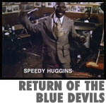
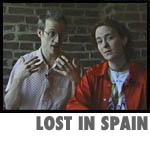
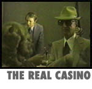
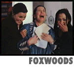

|


|
|


| Episode #18 -
Season Two
Kansas City
Kansas City, Missouri is a city famous for its music, crime and gambling.
Split Screen visits with segments on -- music, crime and gambling.
|
 |
Return of the Blue Devils
John tours Kansas City with Bruce Ricker, director of The Last of the
Blue
Devils, a 1979 film documenting a reunion of Kansas City's greatest
jazz
musicians. Later John and Bruce stop by to visit with jazz great Jay
McShann, who now really is the "last of the Blue Devils." |
|
 |
Lost in Spain
Filmmakers Mike Galinsky and Suki Hawley take you along while
they're on
tour promoting a film, shooting a film, performing in a band, and
hosting
a film festival -- all in Spain no less!
|
|
 |
The Real Casino
Meet some of the real-life counterparts of Martin Scorcese's 1995
film,
Casino. Informants shed some light on shady characters like Frank
"Lefty"
Rosenthal, Tony Spilotro, and Alan Dorfman.
|
|
 |
Foxwoods
Want to know what the Pequot Tribal Nation in Mashantucket, CT does
with
their gambling winnings? Marina Zenovich checks out the Native
American
independent film, Naturally Native.
|
|
|
Episode #18 Credits
|
|
|
|